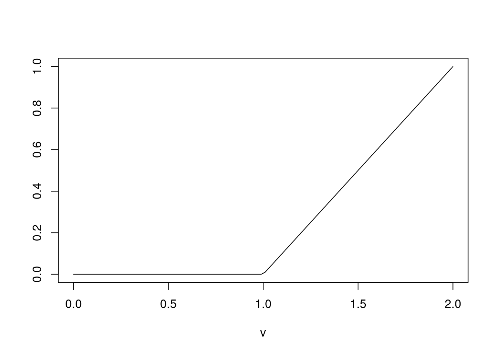
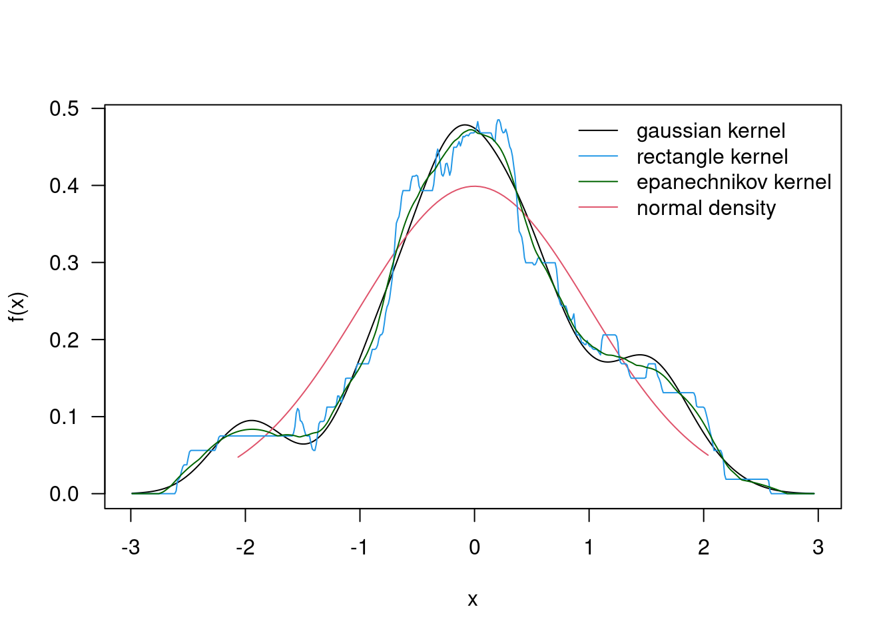

18 Density
18.0.1 Parametric continuous distribution
- The sampled data are from a continuous distribution with density function \(f_{\theta}\)
- \(f(x) \ge 0\) for all x
- \(\int_{-\infty}^{\infty} f(x)dx = 1\)
- \(F(b) = P(X \le b) = \int_{-\infty}^{b}f(x)dx\)
- \(P(a < X \le b) = \int_{a}^{b} f(x)dx = F(b) - F(a), a \le b\)
n=50; xis=rnorm(n,0,1); xbar=mean(xis);sdx=sd(xis)
xs=seq(min(xis),max(xis),length=100); nden=dnorm(xs)
dene=dnorm(xs,xbar,sdx); ry=range(nden,dene)
plot(xs,nden,las=1,type="l",ylim=ry,xlab="x",ylab="Normal density")
lines(xs,dene,col=2); legend("topleft",col=c(1,2),lty=1,bty="n",
legend=c("Standard normal","Estimated"))
18.0.2 Histogram Version
hist(xis,las=1,xlab="observed x",main="")
18.0.3 Nonparametric density estimation
Nonparametric estimation of f does not assume ahead of time that the density belongs to a certain class or family of parametric distribution functions \(P(x- \frac{h}{2} < X \le n + \frac{h}{2}) = \int_{x-\frac{h}{2}}^{x + \frac{h}{2}} f(u)du \\ = F(x+\frac{h}{2}) - F(x-\frac{h}{2})\)
If f is smooth and h is small, \(\int_{x-\frac{h}{2}}^{x + \frac{h}{2}} f(u)du \approx h f(x)\)
A reasonable estimate of f(x) is then \(\hat{f}_{h}x = \frac{F(x+ \frac{h}{2}) - F(x - \frac{h}{2})}{h}\)
18.0.4 The empirical distribution function
- Observation: \(x_1, ..., X_n\)
- \(F_{n}(x) = \frac{1}{n}(\# x_{i} \le x)\)
- Ordered observation: \(x_{(1)} \le x_{(2)} \le ... \le x_{(n)}\)
- \(F_{n}(x) = 0 \text{, if } x \le x_{(1)}\);
- \(F_{n}(x) = \frac{1}{n}\text{, if } x_{1} \le x < x_{(2)}\);
- \(F_{n}(x) = \frac{k}{n}\text{, if } x_{(k)} \le x < x_{(k+1)}\);
- If there is a single observation with value \(x_i\), \(F_n\) has a jump of height \(1/n\) at $x_i;
- If there are r observations with the same value \(x_i\), \(F_{n}\) has a jump of height \(r/n\) at \(x_i\)
- \(F_{n}(x)\) gives the proportion of the numbers less than or equal to x
18.0.5 Example
fhat=function(obx,x,h){
n=length(obx)
sdif=abs(obx-x)/h
fhx=sum(sdif<=1/2)/(n*h)
return(fhx)
}
xobs=c(1,1.3,1.6,1.8,2.4); x=1.7
fhat(xobs,x,0.5)## [1] 0.8## [1] 0.8
fhat(xobs,x,1)## [1] 0.6h=1; do=density(xobs,bw=h,kernel="r",n=5,cut=0);
do$x## [1] 1.00 1.35 1.70 2.05 2.40do$y## [1] 0.2886751 0.2886751 0.2886751 0.2886751 0.2886751do=density(xobs,bw=h/(2*sqrt(3)),kernel="r",n=5,cut=0);
h1=0.5; d1=density(xis,bw=h1,kernel="r"); h2=1.5; d2=density(xis,bw=h2,
kernel="r"); rx=range(xs,d1$x,d2$x); ry=range(nden,d1$y,d2$y)
plot(d1$x,d1$y,las=1,type="l",xlim=rx,ylim=ry,xlab="x",ylab="f(x)")
lines(xs,nden,col=2); lines(d2$x,d2$y,col=4); legend("topleft",
legend=c(paste("h=",h1),"normal",paste("h=",h2)),col=c(1,2,4),
lty=1,bty="n")
18.0.6 Kernal function
A kernal function K is a function such that
\(K(u) \ge 0, -\infty < u <\infty\)
\(K(-u) = K(u)\)
\(\int_{-\infty}^{\infty} K(u)du = 1\) Uniform, rectangular, or box, kernal: \[ K(u) = \begin{cases} 1 , \frac{-1}{2} \le u < \frac{1}{2} \\ 0 , otherwise \end{cases} \]
It takes on the value 1 whenever an observation \(x_i\) is near x, \(u = (x_{i} - x)\h\)
The notion of nearness is determined by the bandwidth h
Taking the sum, the estimate at x is the number of data points \(x_i\) near x multiplied by the factor \(1\nh\)
Given the data, the kernal density estimate is
\(\hat{f}x = \frac{1}{nh}\sum_{i=1}^{n} K(\frac{x-x_{i}}{h})\)
- Triangle kernal:
- Epanechnikov Kernal:
- Gaussian Kernel
Kernel function provides a weighted value for the nubmer of \(x_i\) near x. In particular, data values near x give more weight than those further away. A common choice of bandwidth is $h = 1.06n{}min{2, IQR/1.34} $
18.0.7 Triangle Kernal
u=seq(-1,1,length=100); plot(u,1-abs(u),las=1,ylab="",type="l")
lines(c(-1/2,1/2),c(1,1),col=2); abline(v=c(-1/2,1/2),col=2,lty=3)fhat=function(obx,x,h){
n=length(obx)
sdif=abs(obx-x)/h
fhx=sum( (1-sdif) *( sdif<=1) )/(n*h)
return(fhx)
}
h=0.5; x=1.7
fhat(xobs,x,h)## [1] 0.72dg=density(xis,kernel="gaussian"); dr=density(xis,kernel="r");
de=density(xis,kernel="epanechnikov"); rx=range(xs,dg$x,dr$x,de$x)
ry=range(nden,dg$y,dr$y,de$y); plot(dg$x,dg$y,las=1,type="l",xlim=rx,
ylim=ry,xlab="x",ylab="f(x)"); lines(xs,nden,ylim=ry,col=2);lines(dr$x,
dr$y,ylim=ry,col=4); lines(de$x,de$y,ylim=ry,col="darkgreen");
legend("topright",legend=c("gaussian kernel","rectangle kernel",
"epanechnikov kernel","normal density"), col=c(1,4,"darkgreen",2),
lty=1,bty="n")